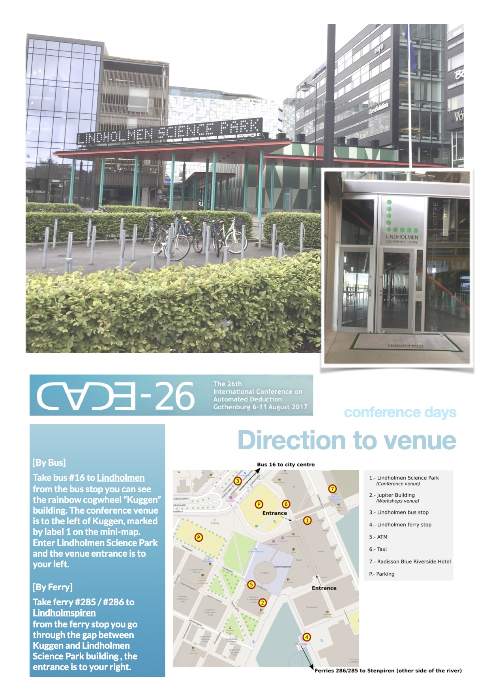
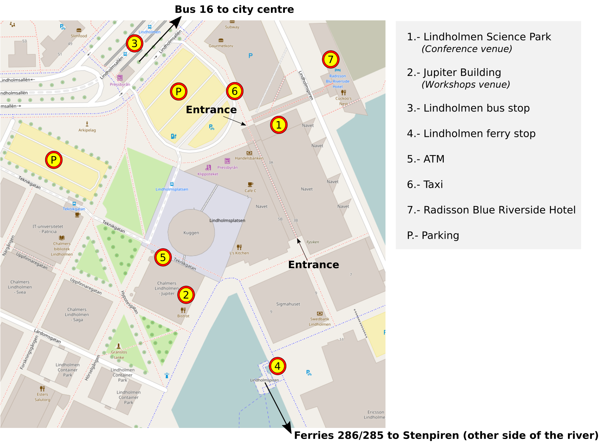

Venue and Hotels
Venue location
Finding our venue
 {kind=link}
{kind=link}
Getting around
Busses, trams and ferries: The best way to get around Gothenburg is to use the local busses, trams and ferries. These are run by Västtrafik. On their webpage, you'll find a handy travel planner, which you can also get on your phone by searching from the Västtrafik App. Note that you need to buy a Västtrafik card/ticket before traveling. Västtrafik cards can be bought at practically any kiosk in town, e.g. Pressbyrån or 7-Eleven.
We recommend obtaining the 3-day ticket (SEK 170) at the airport. More details regarding traffic passes can be found here. Alternatively, you can also get the tickets (ranging from 90 minutes single ticket to 3 days short term ticket) via Västtrafik mobile app ToGo.
Gothenburg
CADE-26 will be held at Lindholmen Science Park in Gothenburg.Gothenburg has spruced up its once rundown neighbourhoods and reinvented itself to show off the best of cutting-edge Swedish design, food and music. — The Guardian, Aug 2015
Ferries trundling round the beautiful, car-free southern archipelago are a tram ride from the city centre. In short, this is as much Scandinavia as you can get. — Lonely Planet, Oct 2012
Getting to Gothenburg
Flights: Gothenburg is served by an international airport Göteborg Landvetter Airport (code: GOT). It is Sweden's second largest airport with many daily flights from all of the major hubs in Europe.
From airport to hotel by taxi: Such a taxi ride is likely to cost around 500-600 SEK, which is currently 51-61 EUR or 56-70 USD. All taxis accept card payments. Taxi prices can vary significantly between taxi companies, so check the price with your driver before entering the taxi! Reputable taxi companies in Gothenburg include: Taxi Göteborg and Taxi Kurir
From airport to hotel by bus: One can catch the Flygbuss Airport coach from outside the check-in hall of the airport. This coach takes you to central Gothenburg — more specifically to Nils Ericson terminal. From central Gothenburg one can catch the local bus 16 to the conference hotel in Lindholmen (the name of the bus stop is Lindholmen).
Hotels
Gothenburg has plenty of hotels to choose from, but be aware that hotels can get booked up quickly during the summer months.
Main hotel
The CADE-26 conference has reserved rooms at the closest hotel to the conference, and attendees can use the following link to make use of the reserved rooms and the fixed price of 1390 SEK per night. Note that this price is only guaranteed for bookings made on or before 10 June 2017.
CADE-26 - Radisson Blu Riverside Hotel Reservation
Alternative hotel
Comfort Hotel Gothenburg is a new hotel centrally located with easy connections by ferry to/from Lindholmen. Price from 1300 SEK per night. Note that this is not a fixed price!
Other hotels
Quality Hotel 11, located on Hisingen island within walking distance from the venue. Bus available.
Price from 846 SEK per night. Note that this is not a fixed price!
Grand Hotel Opera, close to the central station and connections by bus or ferry to Lindholmen.
Price from 895 SEK per night. Note that this is not a fixed price!
Elite Plaza Hotel, centrally located, close to connections by bus or ferry to Lindholmen.
Price from 1100 SEK per night. Note that this is not a fixed price!
Avalon Hotel Göteborg, centrally located, ride with the ElectriCity-bus to Lindholmen.
Price from 1395 SEK per night. Note that this is not a fixed price!
Hostels in Gothenburg for low cost accomodation
{kind=link}
{kind=link}